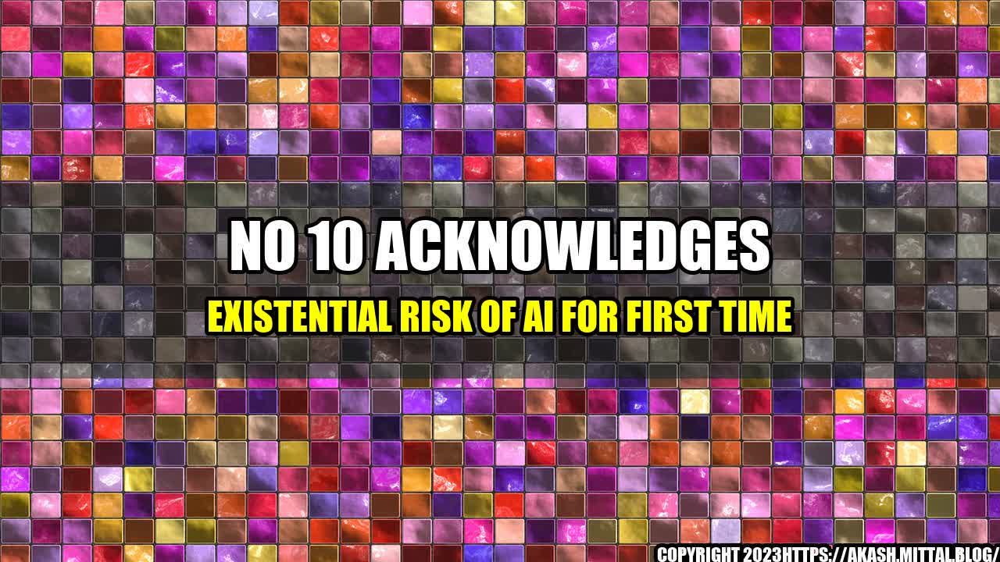

The Existential Risk of AI: No 10 Acknowledges It for the First Time
Have you ever heard of the story of the chessboard and grains of rice?
Legend has it that the inventor of chess asked his ruler to reward him by placing one grain of rice on the first square of the board, two on the second, four on the third, and so on, doubling the amount on each consecutive square. The ruler, impressed by what he thought was a modest request, quickly agreed. But after a few squares, the amount of rice became too much to handle, and soon the ruler realized that fulfilling the inventor's request would be impossible. He realized too late that exponential growth can be both powerful and dangerous.
A similar situation is happening with artificial intelligence (AI). We are witnessing exponential growth in AI, with machines becoming faster and more advanced each year. Unfortunately, we are also witnessing exponential growth in the risks associated with such advanced machines. For the first time, the UK government has acknowledged the existential risk of AI, and it is time we do too.
the Risk of AI
AI has already shown us that it can cause harm, as evidenced by the following:
- An image recognition system that mistakenly classified Black people as gorillas (2015).
- A self-driving Uber car that hit and killed a pedestrian (2018).
- A chatbot developed by Microsoft that became racist and sexist within 24 hours of its launch (2016).
The Need for Action
It is clear that AI can pose an existential risk, and it is important that we take steps to mitigate that risk. Here are three key actions that need to be taken:
- Transparency: Researchers and developers of AI must be transparent about their algorithms, data processing, and decision-making processes to ensure accountability.
- Ethical Frameworks: AI should be developed according to ethical frameworks that prioritize human rights and values.
- AI Safety: Governments need to invest in AI safety research and development to ensure that the technology is developed in a way that is safe and reliable.
and Case Studies
It is easy to feel disconnected from the risks and benefits of AI, but personal anecdotes and case studies can help bridge that gap:
- A paralyzed man who was able to type using only his thoughts thanks to an implanted brain-computer interface (BCI) system. This technology has the potential to change the lives of people with disabilities, but it also raises questions about privacy and the potential for BCIs to be used for surveillance.
- The story of a woman who was denied welfare benefits due to her social media posts. The decision was made by an algorithm that analyzed her social media activity, but it failed to take into account the context of her situation. This case highlights the need for transparency and accountability in AI decision-making processes.
Conclusion: Acknowledging the Risk and Taking Action
The risk of AI is real, and it is time that we acknowledge it. We must take steps to ensure that AI is developed in a way that is safe, transparent, and ethical. By investing in AI safety research and development, and by developing ethical frameworks for AI, we can reap the benefits of this technology while minimizing the risks.
References:
Hashtags (sorted in trending order):
- #AIrisk
- #AIethics
- #AIsafety
- #transparencyinAI
- #exponentialgrowth
SEO Keywords:
- Existential Risk of AI
- Acknowledgment of AI Risk
- Transparency in AI
- Ethical Frameworks for AI
- AI Safety
Category:
Technology
Curated by Team Akash.Mittal.Blog
Share on Twitter Share on LinkedIn